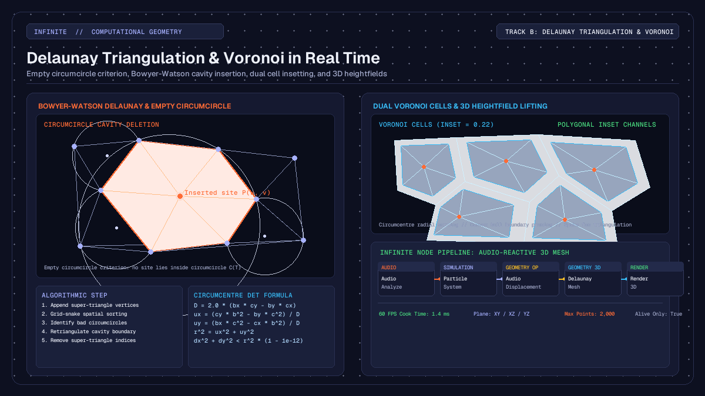

Creative
Delaunay triangulation and Voronoi geometry in real time
How real-time Delaunay triangulation and dual Voronoi cells work in creative coding: empty circumcircles, Bowyer-Watson, polygon insetting, and audio-reactive 3D.

on this page
- Dynamic topology versus static meshes in computer graphics
- The empty circumcircle criterion and Bowyer-Watson insertion
- Building the Voronoi dual and polygon insetting
- Projecting planes and lifting back to three dimensions
- Patching an audio-reactive mesh in Infinite
- Computational complexity, spatial sorting, and point budgets
- Practical creative workflows and aesthetic applications
In computational geometry and procedural graphics, delaunay triangulation real time algorithms provide a method to generate clean, dynamic 3D meshes directly from shifting point clouds. While static meshes rely on pre-baked vertex index buffers that remain rigid during performance, dynamic triangulation reconstructs the topological connectivity between vertices on every frame. When combined with its mathematical dual, the Voronoi diagram, artists can transform particle clouds, audio waveforms, and spatial simulations into fluid geometric surfaces, faceted crystalline shells, and organic cellular tessellations.
In real-time audiovisual environments like Infinite, dynamic triangulation links sound synthesis with procedural 3D form. Because audio signals can displace spatial coordinates at frame rates, recalculating Delaunay triangles and Voronoi cells on the fly allows the topology of a mesh to split, merge, and reform in direct response to acoustic energy.
Here is an in-depth examination of the mathematical principles behind Delaunay triangulation, the Bowyer-Watson cavity insertion algorithm, dual Voronoi cell generation with polygon insetting, 3D heightfield lifting, and how to patch an audio-reactive mesh using native nodes.

Dynamic topology versus static meshes in computer graphics
Most 3D models in computer graphics are defined by two arrays: a vertex array containing spatial positions (x, y, z), normals, and texture coordinates, and an index array containing triplets of integers that reference those vertices to form triangular faces. In standard rendering pipelines, the index array is static. When a vertex shader or physics engine deforms the model, the vertices move, but the edges between them remain fixed.
This rigidity works well for character meshes and rigid bodies, but it limits generative and reactive art. If a cloud of particles expands, contracts, or swirls under turbulent forces, stretching static triangles produces long, distorted needles known as slivers. Slivers cause severe rendering artefacts, including rasterisation bottlenecks, pixel flickering, and erratic surface normals under directional lighting.
Dynamic triangulation solves this by recomputing the triangle index buffer on every cook cycle. As points drift, separate, or enter the scene, the algorithm evaluates spatial proximity and reconfigures the edge connections. When two particles move apart, their connecting edge dissolves, and new edges form between closer neighbours. This produces a continuous, surface-like manifold that adapts to whatever spatial distribution the simulation generates.
The empty circumcircle criterion and Bowyer-Watson insertion
A triangulation of a planar point set P is a collection of non-overlapping triangles whose vertices are in P and whose union covers the convex hull of P. For any set of three non-collinear points in the Cartesian plane, there exists a unique circle that passes through all three points: the circumcircle.
In 1934, Boris Delaunay proved that a triangulation is optimal if and only if the circumcircle of every triangle contains no points of P in its interior. This condition is the empty circumcircle criterion:
For every triangle T(a, b, c) in the triangulation:
Distance(p, Centre(T)) >= Radius(T) for all points p in PThe empty circumcircle property possesses a critical geometric consequence: it maximises the minimum interior angle of all triangles in the mesh. By avoiding skinny, acute angles, Delaunay triangulation produces the most equiangular, well-proportioned triangles possible for any given distribution of vertices.
Computing the circumcircle in double precision
Given three 2D vertices a, b, and c, we can translate vertex a to the origin:
bx = b.x - a.x, by = b.y - a.y
cx = c.x - a.x, cy = c.y - a.yThe circumcentre offset (ux, uy) from a is found by solving the intersection of the perpendicular bisectors of sides ab and ac. The system determinant D is:
D = 2.0 * (bx * cy - by * cx)If abs(D) is close to zero, the three vertices are collinear, and no finite circumcircle exists. Otherwise, using the squared lengths b2 = bx*bx + by*by and c2 = cx*cx + cy*cy, the circumcentre (cx_circ, cy_circ) and radius squared r2 are:
ux = (cy * b2 - by * c2) / D
uy = (bx * c2 - cx * b2) / D
cx_circ = a.x + ux
cy_circ = a.y + uy
r2 = ux * ux + uy * uyA point (px, py) violates the Delaunay criterion for this triangle if:
(px - cx_circ)^2 + (py - cy_circ)^2 < r2 * (1.0 - 1e-12)The small epsilon tolerance 1e-12 prevents numerical instability when points lie almost exactly on the circumcircle boundary.
The Bowyer-Watson incremental algorithm
The Bowyer-Watson algorithm (developed independently by Adrian Bowyer and David Watson in 1981) inserts points one by one into an existing Delaunay triangulation:
- Initialise with a super-triangle: construct an artificial, expansive triangle that completely encloses the bounding box of the point set. This guarantees that all real points fall within at least one valid triangle.
- Find bad triangles: when inserting point
p, scan the existing triangle list and identify every triangle whose circumcircle enclosesp. - Form the cavity: delete all bad triangles. The union of these deleted triangles forms a star-shaped polygonal cavity containing
p. The boundary of this cavity consists of all edges that belonged to exactly one bad triangle. - Sew new triangles: connect each edge of the cavity boundary to the new point
p, creating a set of new triangles that satisfy the empty circumcircle criterion. - Remove super-triangle vertices: once all points are inserted, discard every triangle that shares any vertex with the initial super-triangle. The remaining triangles form the Delaunay triangulation of the input points.
To maintain real-time performance at 60 FPS, the implementation in Infinite sorts points along a grid-snake spatial curve prior to insertion. Because sequentially inserted points are spatially adjacent, the set of invalid triangles remains local, allowing rapid cavity extraction. Furthermore, dead triangles are periodically compacted in memory to prevent the traversal loop from scanning discarded entries.
Building the Voronoi dual and polygon insetting
Every Delaunay triangulation has a unique geometric dual: the Voronoi diagram (first studied by Georgy Voronoy in 1908). While Delaunay triangulation partitions space into triangles connecting neighbouring sites, the Voronoi diagram partitions space into convex polygonal cells, where each cell contains all spatial locations closer to its generating site than to any other site.
The duality between the two structures is exact:
- Each circumcentre of a Delaunay triangle becomes a vertex of the Voronoi diagram.
- Each edge in the Delaunay triangulation corresponds to a shared boundary edge in the Voronoi diagram, running perpendicular to the Delaunay edge.
- Each site in the Delaunay triangulation is surrounded by a Voronoi polygon whose vertices are the circumcentres of the Delaunay triangles sharing that site.
Extracting Voronoi cells from triangle fans
To construct Voronoi cells from the triangulated mesh, the Voronoi Cells node in Infinite executes the following steps:
- Count edge usage: iterate through all Delaunay triangles and count how many times each undirected edge appears. Edges that appear exactly once form the convex hull of the point cloud.
- Prune hull vertices: sites that lie on the convex hull have unbounded Voronoi cells that extend to infinity. These are flagged and skipped so that only well-defined, closed interior cells are generated.
- Assemble triangle fans: for each interior site, collect the indices of all triangles meeting at that site.
- Sort circumcentres radially: calculate the circumcentre of each triangle in the fan and compute its polar angle relative to the site:
angle = atan2(cy - site_y, cx - site_x). Sorting the circumcentres by angle arranges the vertices of the Voronoi cell in counter-clockwise order. - Cap sliver circumcentres: triangles near the outer boundary can occasionally have circumcentres that lie far outside the cloud. The engine clamps the distance of any circumcentre to at most twice the maximum radius of the triangle, preventing spikes from rupturing the cell layout.
Polygon insetting for architectural and cellular aesthetics
A flat tessellation where all cells touch edge-to-edge can look monolithic. The Voronoi Cells node includes an inset parameter (ranging from 0.0 to 0.95) that scales each cell towards its generating site:
inset_vertex = site + (circumcentre - site) * (1.0 - inset)When inset is zero, cells share mutual boundaries. As inset increases, channels open up between adjacent cells, revealing negative space. The node triangulates each inset cell by creating a central vertex at the site position and generating a fan of triangular faces connecting the centre to each pair of adjacent perimeter vertices.
This insetting mechanism enables diverse creative styles, ranging from stained-glass windows and architectural ceiling cassettes to cracked desert mud and microscopic cellular membranes.
Projecting planes and lifting back to three dimensions
While 2D Delaunay algorithms are mathematically robust and computationally tractable in real time, many generative audiovisual scenes require 3D geometry. Calculating true 3D Delaunay tetrahedralisation is substantially more expensive, $O(n^2)$ to $O(n^4)$, and yields solid 3D tetrahedra rather than a hollow, renderable 2D surface manifold.
To solve this, Infinite uses a 2.5D projection and lifting architecture in DelaunayMeshNode:
- Projection: the user selects a projection plane via the
planeparameter (0: XY,1: XZ,2: YZ). The 3D coordinates(px, py, pz)of each site are projected onto the selected 2D plane:
- For
XY, the projected coordinates are(u = px, v = py), facing normal(0, 0, 1). - For
XZ, the projected coordinates are(u = pz, v = px), facing normal(0, 1, 0). - For
YZ, the projected coordinates are(u = py, v = pz), facing normal(1, 0, 0).
- Planar triangulation: the 2D projected coordinates are triangulated using the Bowyer-Watson engine. Texture coordinates
(u, v)are normalised across the bounding box of the cloud to enable texture mapping. - Elevation lifting: once the triangle topology is established, the original third unprojected coordinate is restored for each vertex.
When a point cloud has elevation, such as an audio-displaced particle grid or terrain heights, the 2D triangulation acts as a surface mesh lifted into 3D space. The resulting surface bends, folds, and undulates with the underlying simulation, creating an expressive terrain that never tears or overlaps unnaturally.
Patching an audio-reactive mesh in Infinite
Building a complete real-time audiovisual patch using Delaunay and Voronoi nodes involves connecting audio analysis, procedural point generation, geometry operations, and 3D rendering.
Here is a recommended node graph layout:
[Audio Input] -> [Audio Analyze]
|
(FFT low / mid / high)
|
v
[Point Distribution] -> [Audio Displacement] -> [Delaunay Mesh] -> [Material] -> [Render 3D]
|
(or [Voronoi Cells])1. Generating the point cloud
Add a Point Distribution node to spawn the initial site positions. You can set the distribution mode to a 2D Poisson disc distribution or a random planar scatter. Alternatively, a Particle System node can be used to simulate floating particles driven by curl noise and velocity damping.
Set the point count to approximately 800 to 1,500 points. This provides high geometric detail while leaving headroom for other synthesis and graphics nodes on the canvas.
2. Audio displacement
Wire the audio output from a synth, sampler, or live audio track into an Audio Analyze node. The node extracts an 8-band FFT spectrum and transient onset detectors.
Patch the point cloud from Point Distribution into the geometry input of an Audio Displacement node. Map the low-frequency bass band to the vertical displacement axis. When a kick drum hits, the points push upward in world space.
3. Mesh construction with Delaunay Mesh
Connect the displaced points into a Delaunay Mesh node. Configure its parameters:
plane: selectXZso the triangulation occurs across the horizontal ground plane while the audio displacement lifts vertices along theYaxis.aliveOnly: enable this toggle when using particles so that dead particles are excluded before triangulation.maxPoints: set to2000to protect the rendering loop against unexpected particle bursts.
As the points move under the influence of the audio signal, the Delaunay engine dynamically recalculates the triangle indices. If you switch the node to Voronoi Cells and set inset to 0.20, the mesh transforms into an array of floating, isolated tiles that pulse and tilt with the sound.
4. Shading and rendering
Wire the mesh output into a Material node. Set the roughness to 0.3 and metallic to 0.8 to give the facets a reflective, polished finish.
Connect the material into a Render 3D node alongside a Directional Light and a Camera 3D. As the facets shift their orientation each frame, specular highlights glint across the changing edges, producing a visual response synchronized to the music.
For further exploration of shader uniforms and procedural deformation techniques, refer to our guide on procedural 3D geometry nodes and audio deformation and our walkthrough of audio-reactive particle systems in real time.
Computational complexity, spatial sorting, and point budgets
Understanding the computational performance of dynamic triangulation is essential for maintaining a stable 60 FPS frame rate in live performances.
Time complexity and memory compaction
A naive implementation of the Bowyer-Watson algorithm tests every inserted point against all existing triangles, resulting in an $O(n^2)$ worst-case time complexity. For 1,000 points, this requires approximately 1,000,000 circumcircle checks.
To optimise this for real-time operation, Infinite uses a grid-snake spatial sort. By sorting points into a 2D spatial grid prior to insertion, each point is placed into the mesh immediately adjacent to the triangles created by its spatial predecessor. This keeps the cavity search local and reduces average-case execution time towards $O(n \log n)$.
Furthermore, during cavity deletion, bad triangles are marked dead. In a long insertion loop, dead triangles can clutter memory and slow down linear scans. Infinite's core Delaunay implementation checks when the triangle array exceeds 4,096 entries and automatically compacts the array by copying live triangles into contiguous memory.
Practical point budgeting
For real-time graphics at 60 FPS, a frame budget is roughly 16.6 milliseconds. In a combined audiovisual patch, audio processing typically takes 1 to 2 ms, GPU shader passes take 4 to 8 ms, leaving approximately 3 to 5 ms for CPU geometry calculations.
Based on benchmark tests across Apple Silicon and x86_64 architectures:
- 300 to 600 points: cook time is under 0.6 ms. This is ideal when multiple meshes are active simultaneously or when running complex GLSL post-processing effects.
- 1,000 to 1,800 points: cook time is 1.2 to 2.4 ms. This produces dense, intricate geometric surfaces with crisp silhouette details.
- 2,500 to 5,000 points: cook time reaches 4.5 to 9.0 ms. While viable on dedicated desktop machines, it approaches the limit of real-time responsiveness and should be used cautiously in live VJ contexts.
Infinite enforces a configurable maxPoints cap (defaulting to 2,000 points) on both Delaunay Mesh and Voronoi Cells. If an upstream particle emitter exceeds this threshold, the node systematically subsamples the sites to maintain real-time stability rather than dropping frames.
Practical creative workflows and aesthetic applications
Dynamic Delaunay and Voronoi geometry opens up distinct visual aesthetics that are difficult to achieve with standard polygonal modeling:
- Low-poly crystalline landscapes: by displacing an XZ particle grid with Perlin noise and audio low-end, Delaunay triangulation forms a faceted, low-poly mountain range where polygons continuously adapt to the contours.
- Shattered glass and Voronoi fracture: mapping an audio onset trigger to the
insetcontrol creates the illusion of an impact crater, where a smooth surface abruptly fractures into hundreds of receding tiles when a snare drum fires. - Cellular lifeforms and organic membranes: pairing Voronoi Cells with curl-noise particle flow simulates the movement of microscopic cells drifting under fluid currents.
- Dynamic wireframe webs: extracting the edges of the Delaunay mesh and rendering them as geometric lines yields a retro-futuristic radar web that connects points when they approach each other and severs links when they diverge.
You can inspect ready-to-run audiovisual patches and templates in the Infinite Library, or explore the core architecture on the Infinite home page. Dynamic triangulation bridges the gap between chaotic point distributions and ordered 3D surfaces, turning raw mathematical coordinates into living generative visuals.